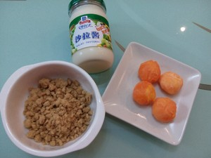
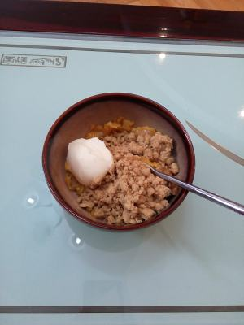
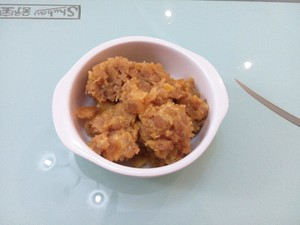
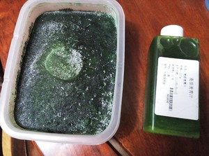
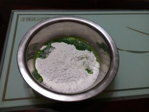
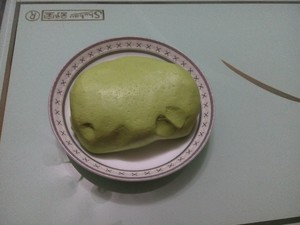
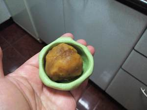
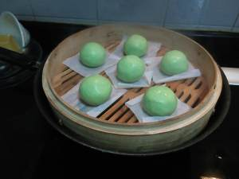
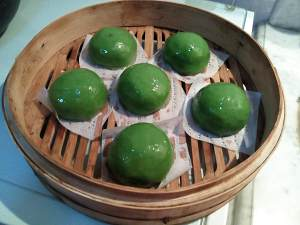
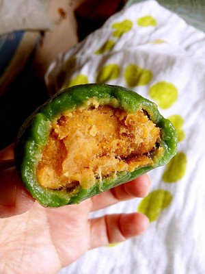

清明时节雨纷纷，又到了吃青团的时节。
青团子油绿如玉，糯韧绵软，清香扑鼻，吃起来甜而不腻，肥而不腴。青团子还是江南一带人用来祭祀祖先必备食品，正因为如此，青团子在江南一带的民间食俗中显得格外重要。
清明为什么要吃青团？这种风俗可追溯到两千多年前的周朝。据《周礼》记载，当时有“仲春以木铎循火禁于国中”的法规，于是百姓熄炊，“寒食三日”。在寒食期间，即渭明前一、二日，还特定为“寒日节”。
古代寒食节的传统食品有糯米酪、麦酪、杏仁酪扬，这些食品都可事前制就，供寒日节充饥，不必举火为炊。现在，青团有的是采用青艾，有的以雀麦草汁和糯米粉捣制再以豆沙为馅而成，流传百余年，仍旧一只老面孔。人们用它扫墓祭祖，但更多的是应令尝新，青团作为祭祀的功能日益淡化。
现在来看看怎么在家里做青团吧！
用料
步骤
1,先准备馅芯的材料:咸蛋黄、肉松、色拉酱

2,咸蛋黄隔水蒸熟，压成颗粒状粗泥粒，加入色拉酱，增加复合口味，以便馅芯容易成团。

3, 三种材料拌匀成团，口味根据自己的需求，可以咸蛋黄多些，也可以肉松多些。

4, 制作青团可以用艾草或麦青，左面是新鲜艾草焯水后打成泥，冰箱速冻可以存上一年，随取随用。右面是网购的麦青汁，咸口青团建议选用麦青汁。艾草有中药味，带有苦涩，和面时加点白糖，改善口感；麦青有青草香味。

5, 三种粉按比例混合倒入盆中，加入麦青汁、少许色拉油、温水和成团。

6,面团和到光滑，呈苹果绿色。颜色不宜过深，面团蒸制时会变深。

7,取一面团打窝，包入一团馅芯。

8,搓成汤圆一样，垫油纸码入笼屉。开锅中火蒸15分钟。

9,出锅后立马刷一层色拉油增加光泽，以防表皮发硬。

10,外皮软糯Q弹，内馅油亮温润，满口溢香。
